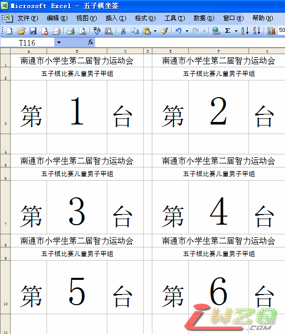

南通市五子棋比赛坐签
首页
裁判&规则
#1 南通市五子棋比赛坐签 作者：有志青年 发表时间：2012-2-4 19:38:00

 五子棋坐签.rar
五子棋坐签.rar ［ 卢老师 于 2012-2-5 17:16:09 时花20金币送鲜花一朵］
#2 Re:南通市五子棋比赛坐签 作者：有志青年 发表时间：2012-2-4 19:38:54
下载后，查找替换，搞定后，直接A4纸打印、剪裁、张贴即可
#3 Re:南通市五子棋比赛坐签 作者：小帮帮 发表时间：2012-2-5 13:38:56
还不错啊，继续发扬！